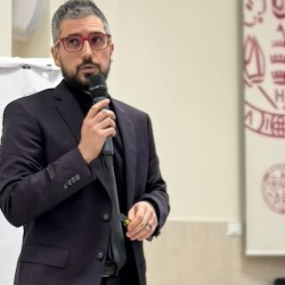

I study how social norms, incentives, and strategy shape the way people actually behave — through lab and field experiments at the edge of economics, game theory, and psychology.

FA Federico Atzoripronunciation: /feˈdeːriko aˈzoːri/
*surname refers to an ancient village in the Judicate of Cagliari
I'm a behavioral scientist who studies how people actually behave when they face incentives, norms, and strategic interactions. Over the years, I've worked with lab (yes, also programming skills) and field experiments to unpack the mechanics of human cooperation and conflict. My compass sits between Microeconomics, Game Theory, Behavioral and Experimental Economics, driven by a stubborn curiosity for how social norms emerge, shape choices, and sometimes tilt the entire game.
| Title | Authors | Repo |
|---|---|---|
| Human-AI Interaction in Creative Tasks | Atzori F., Corazzini L., Maggian V., Pavesi F., Scotti M. (2026) | Ca' Foscari WP |
| Creative Minds in the Age of AI | Atzori F., Corazzini L., Guarnieri A. (2025) | CRENoS |
| When Giving Justifies Gambling | Ballicu G., Atzori F., Pelligra V. (2025) | SSRN |
| Under Big Gods' Eyes | Atzori F., Ballicu G., Pelligra V. (2025) | CRENoS |
Sardinia (/sɑːrˈdɪniə) — second-largest island in the Mediterranean Sea, after Sicily. Inhabited since the Paleolithic era (~20,000-10,000 years ago). For some, the mythical Atlantis.